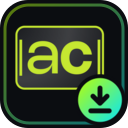

AutoClipper DL autoclipper.live →Three quick things and you'll never paste a link into a sketchy converter site again.
Click the puzzle-piece icon in Chrome's toolbar and hit the pin next to AutoClipper, so the button is always one click away.
Browse Instagram, TikTok, Reddit, X or Twitch as usual. When a video is detected, the AutoClipper button appears in the corner — click Download.
On a long YouTube video, hit Send to AutoClipper to cut it into captioned, ready-to-post viral clips automatically.